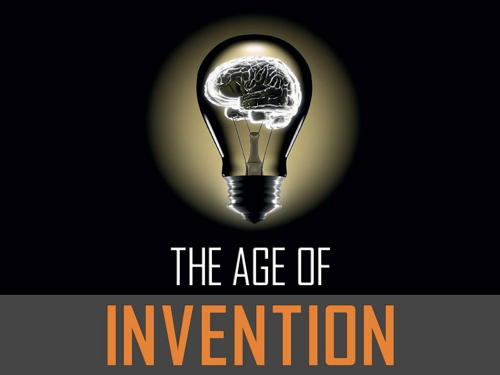

TOP 10 INVENTIONS THAT CHANGED THE WORLD COMPLETELY
World is changing everyday just because of inventions everyday. Its all discoveries of
human
mind that we are now in this era.
But there are some inventions which changed the world completely. Check out the list.